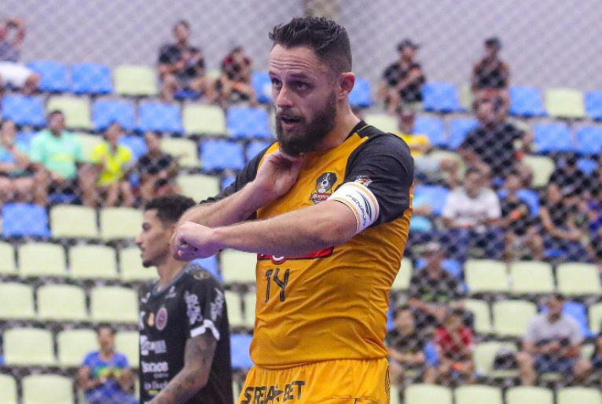
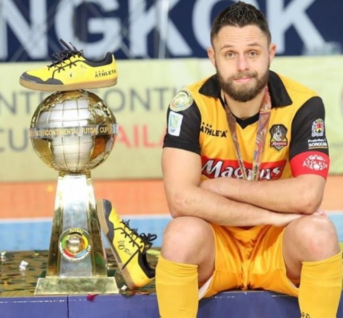
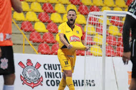

Capita o melhor do futsal

campeonatos ganhos Pelo time sorocabano, Capita tem como principais títulos: duas Ligas Nacionais (2014 e 2020), uma Libertadores (2015),
três Mundiais (2016, 2018 e 2019), uma Taça Brasil (2021), além de cinco estaduais e outros tantos torneios regionais.
Foi eleito o melhor jogador da LNF de 2020.

E, ao que tudo indica, essa história não deve ganhar um capítulo final tão cedo.
Aos 39 anos, o Capita segue jogando em alto nível. Prova disso é o fato de liderar a equipe ao título Paulista, à final da Copa do Brasil e a mais um playoff de LNF.
Nesta última competição, aliás, ele é o artilheiro da equipe com 19 gols e figura no top 5 de goleadores de toda a liga.
Veja os números de Rodrigo ano a ano pelo Sorocaba
2014 - 56 jogos | 33 gols
2015 - 69 jogos | 57 gols
2016 - 49 jogos | 34 gols
2017 - 51 jogos | 54 gols
2018 - 64 jogos | 39 gols
2019 - 55 jogos | 46 gols
2020 - 30 jogos | 20 gols
2021 - 39 jogos | 26 gols
2022 - 66 jogos | 51 gols
2023 - 58 jogos | 40 gols
capita
